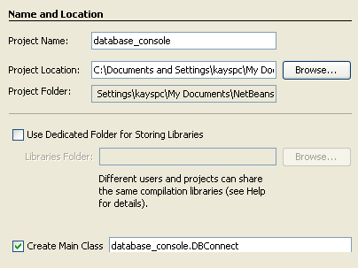
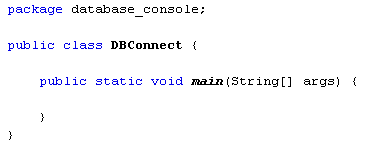
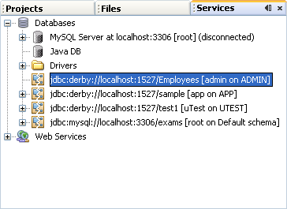
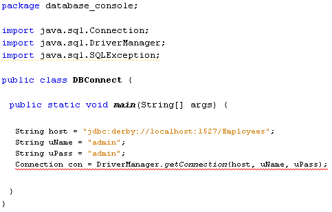
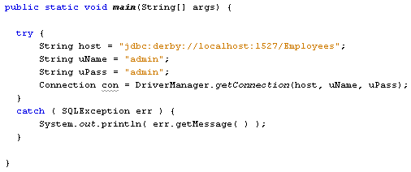
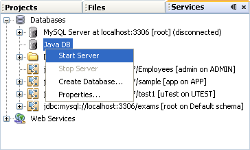
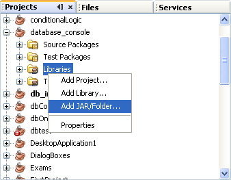
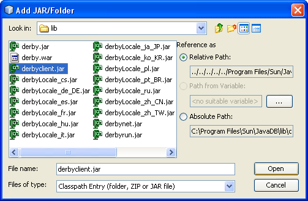
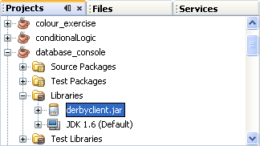

Connect to a Database Using Java Code
In a later section, you'll create a Java form that loads information from a database. The form will have Next and Previous to scroll through the data. Individual records will then be displayed in text fields. We'll also add button to Update a record, Delete a record, and create a new record in the database.
To get started, and for simplicity's sake, we'll use a terminal/console window to output the results from a database.
So start a new project for this by clicking File > New Project from the NetBeans menu. Create a Java Application. Call the package database_console, and the Main class DBConnect:

When you click Finish, your code should look like this:

Connecting to the Database
To connect to a database you need a Connection object. The Connection object uses a DriverManager. The DriverManager passes in your database username, your password, and the location of the database.
Add these three import statements to the top of your code:
import java.sql.Connection;
import java.sql.DriverManager;
import java.sql.SQLException;
To set up a connection to a database, the code is this:
Connection con = DriverManager.getConnection( host, username, password );
So the DriverManager has a method called getConnection. This needs a host name (which is the location of your database), a username, and a password. If a connection is successful, a Connection object is created, which we've called con.
You can get the host address by looking at the Services tab on the left of NetBeans:

The address of the highlighted database above is:
jdbc:derby://localhost:1527/Employees
The first part, jdbc:derby://localhost, is the database type and server that you're using. The 1527 is the port number. The database is Employees. This can all go in a String variable:
String host = "jdbc:derby://localhost:1527/Employees";
Two more strings can be added for the username and password:
String uName = "Your_Username_Here";
String uPass= " Your_Password_Here ";
Add these three string before the connection object and your code would look like this:

As you can see in the image above, there is a wavy underline for the Connection code. The reason for this is because we haven't trapped a specific error that will be thrown up when connecting to a database - the SQLException error.
It's the DriverManager that attempts to connect to the database. If it fails (incorrect host address, for example) then it will hand you back a SQLException error. You need to write code to deal with this potential error. In the code below, we're trapping the error in catch part of the try … catch statement:
try {
}
catch ( SQLException err ) {
System.out.println( err.getMessage( ) );
}
In between the round brackets of catch, we've set up a SQLException object
called err. We can then use the getMessage method of this err
object.
Add the above try …catch block to your own code, and move your four
connection lines of code to the try part. Your code will then look like this:

Try running your code and see what happens.
You may get this error message in the console window:
"java.net.ConnectException : Error connecting to server localhost on port 1527 with message Connection refused: connect."
If you do, it means you haven't connected to your database server. In which case, right click on Java DB in the Services window. From the menu that appears, click Start Server:

You need to make sure that any firewall you may have is not blocking the connection to the server. A good firewall will immediately display a message alerting you that something is trying to get through, and asking if you want to allow or deny it. When you allow the connection, your NetBeans output window should print the following message:
"Apache Derby Network Server - 10.4.1.3 - (648739) started and ready to accept connections on port 1527 at DATE_AND_TIME_HERE"
Once your server is started, run the programme again. There's a very good chance you'll get another error message:
"No suitable driver found for jdbc:derby://localhost:1527/Employees"
The reason for this error is that the DriverManager needs a Driver in order to connect to the database. Examples of drivers are Client Drivers and Embedded Drivers. You can import one of these so that the DriverManager can do its job.
Click on the Projects tab to the left of the Services window in NetBeans. (If you can't see a Projects tab, click Window > Projects from the menu bar at the top of NetBeans.)
Locate your project and expand the entry. Right-click Libraries. From the menu that appears, select Add Jar/Folder:

When you click on Add Jar/Folder a dialogue box appears. What you're doing here is adding a Java Archive file to your project. But the JAR file you're adding is for the derby Client Drivers. So you need to locate this folder. On a computer running Windows this will be in the following location:
C:\Program Files\Sun\JavaDB\lib
The file you're looking for is called derbyclient.jar. If you can't find it, or are using an operating system other than Windows, then do a search for this file. Note the location of the file.
In the dialogue box, select the derbyclient.jar file:

Click Open and the file will be added to your project library:

Now that you have a Client driver added to your project, run your programme again. You should now be error free. (The Output window will just say Run, and Build Successful.)
In the next lesson, we'll continue with this Java database tutorial.